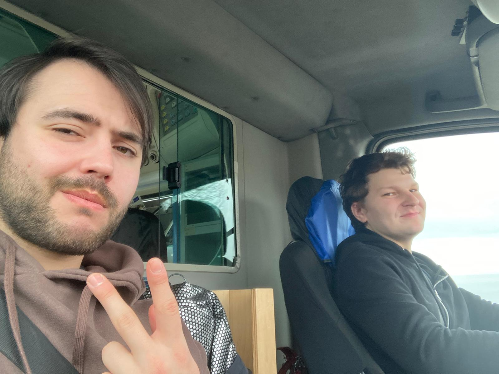
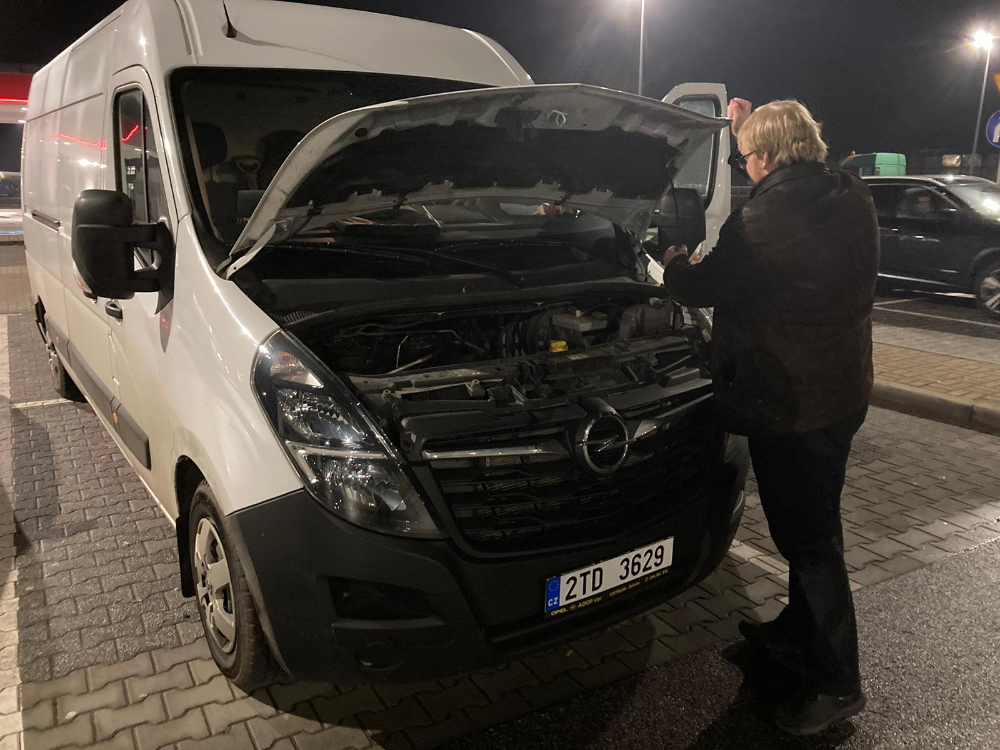
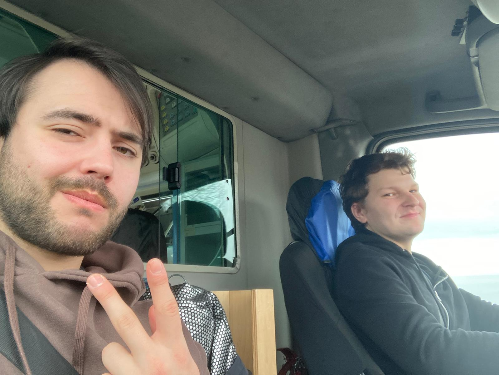
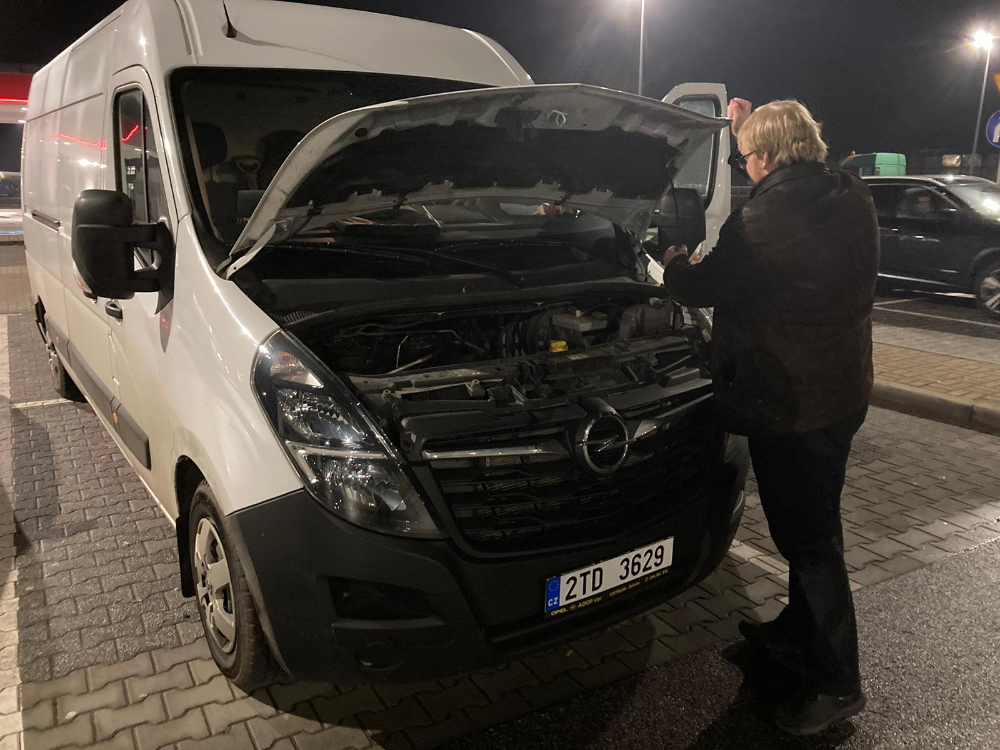
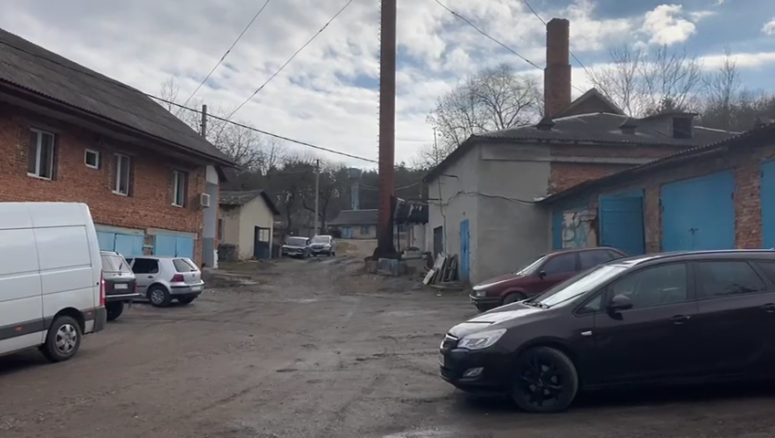
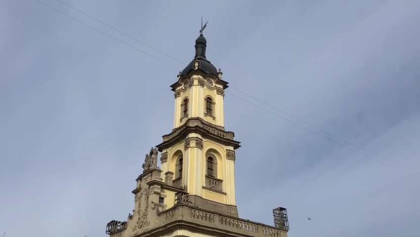
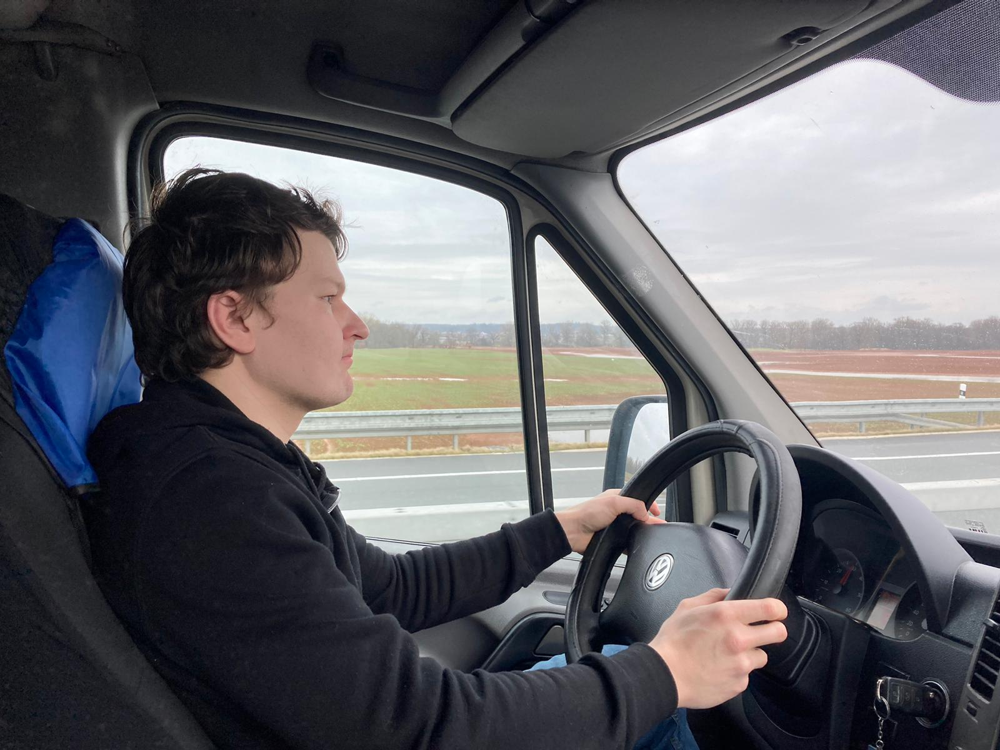
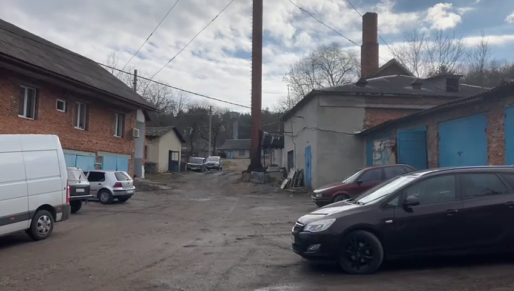
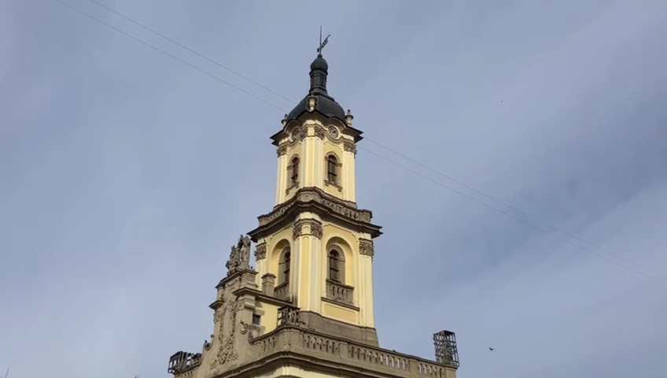
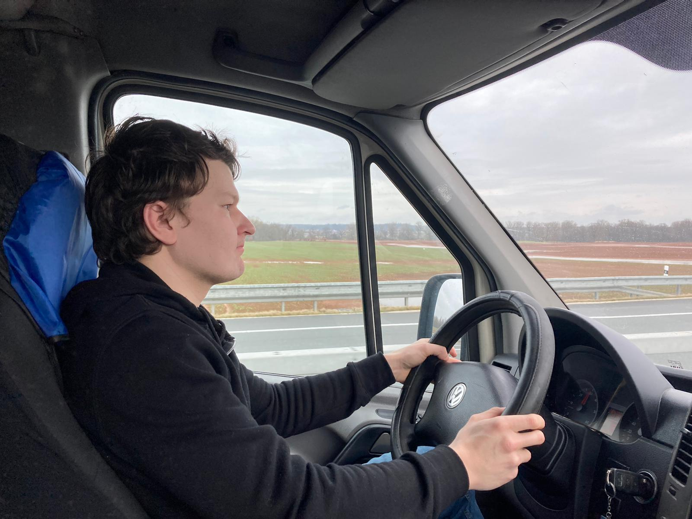

Válka a rodiny
„Za Zelenského nebojuji, bojuji za to, aby moje rodina byla v bezpečí.“ Tuhle větu, i když různě formulovanou, slýcháme na Ukrajině často. Prezident Volodymyr Zelensky má sice značnou podporu veřejnosti, neslouží však jako hlavní motivace k nasazení života. V srdci každého vojáka jsou různé priority a politika nebývá vždy vysoko.
Na Ukrajině trvají boje už 10 let. Před dvěma roky Rusko po okupaci některých částí na východě země začalo invazi celé země. Asi každý ve východní a střední Evropě měl strach, že jeho země bude dalším terčem. Po chvíli se ale střelba, rakety, miny či smrt civilistů staly běžnou součástí našich životů a brzy snad upadne v zapomnění.
Náš projekt na Hackatonu (předmět na Vyšší odborné škole Publicistiky, který trvá okolo 50 hodin) na to má upozornit. Připojili jsme se k cestě humanitární organizace Cesta naděje života, z. s., která lidem na Ukrajině pomáhá od února 2022.
Na výpravě jsme se mimo jiné zaměřili i na vztah, jaký mají děti ke svým rodičům. Některé se osamostatňují v podobném věku jako my, jiné musí dospět mnohem dříve.


 



 




